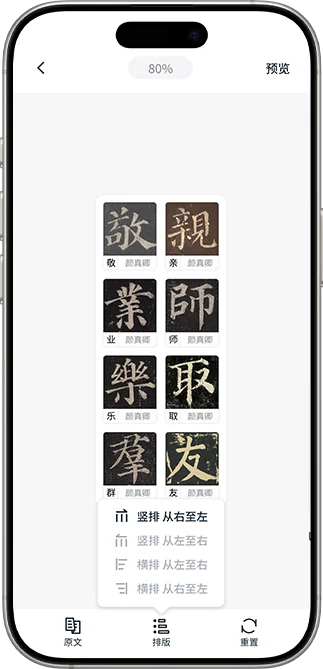
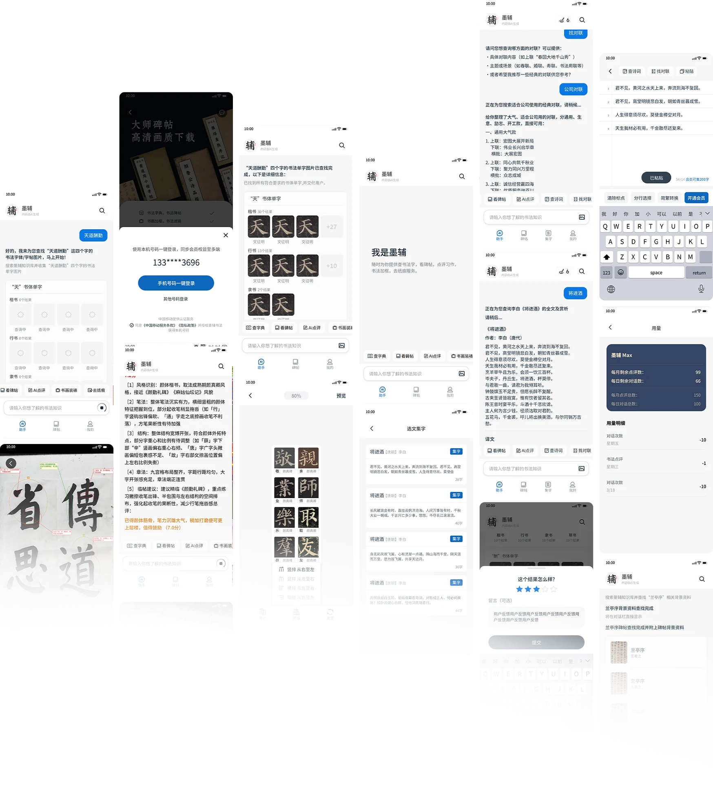

墨辅书法
用数字化 + AI 工具，帮用户从入门到精通，系统、高效提升书法能力
产品核心目标
墨辅书法，秉承“墨传千古，辅君成艺”之念，为书法爱好者提供专业的数字学书平台。应用核心收录 500 余套涵盖各体经典的高清碑帖，配合 AI 能力提升书法学习效率。
APP 简介
墨辅书法是由广州家画信息技术有限公司打造的 AI 智能书法学习平台，秉承“墨传千古，辅君成艺”的理念，为书法爱好者提供从入门到进阶的系统学习体验。
用户价值目标分析
墨辅书法以 AI 数字化 + 海量书法资源为核心，打破传统书法学习门槛高、成本高、无指导、资源少的痛点，覆盖入门学习、技艺精进、教学赋能与传统文化欣赏等场景。
核心功能
基于 AI 大模型的书法知识问答系统，查询海量书法史、名家、碑帖等内容进行回复。
提供历代经典碑帖及字帖资源，高清下载展现，支持临摹等功能，助力书法学习。
上传习字作品，通过 AI 智能分析结构、笔法等内容，给出修改建议与点评评分。

通过 AI 智能分析结构、笔法等内容，给出最优化的集字方案，也可自选集字。
APP UI 概览
